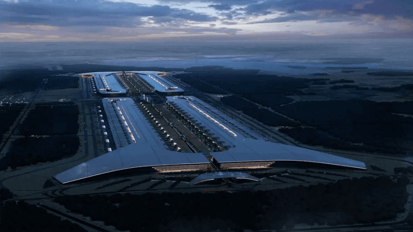
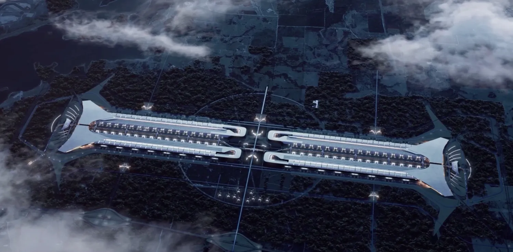
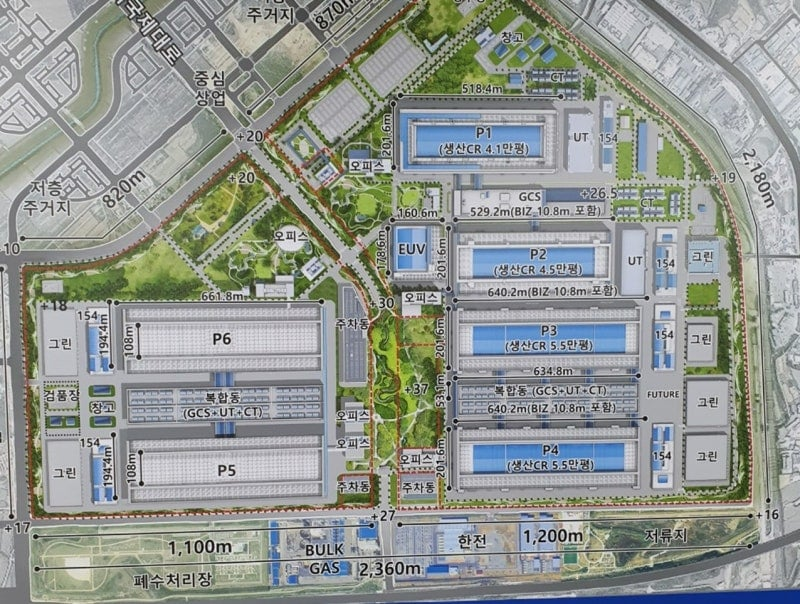
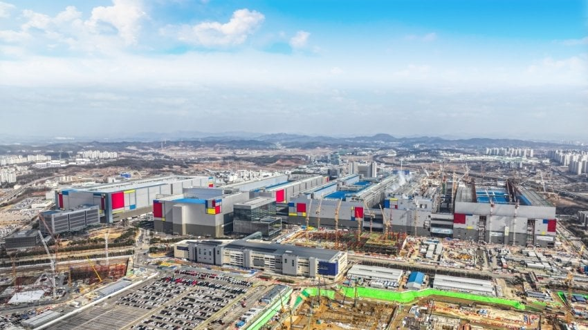
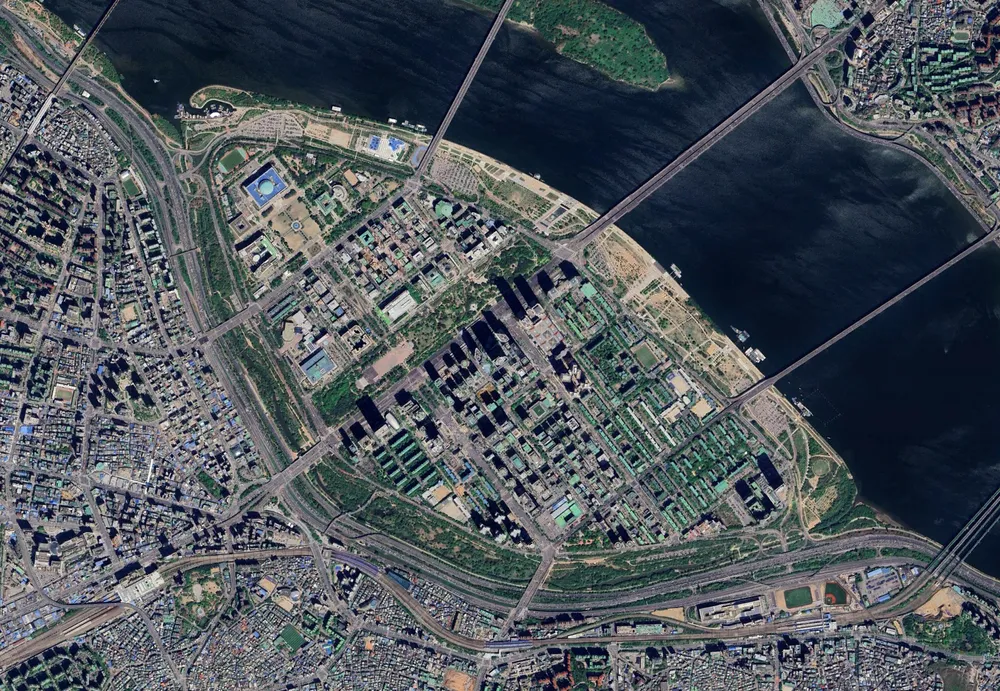

테라팹
일론 머스크가 추진중인 반도체를 직접 생산하기 위해 만드는 공장
규모가 평수로는 281만평으로 세계에서 가장 거대한 건물이 될 예정임
축구장 1,300개만한 존나 큰 규모다..



세계 최대 반도체 생산기지인 삼성전자 평택캠퍼스가 여의도랑 비슷한
약 87만평임
축구장 400개 정도 규모 ㅇㅇ


테라팹
일론 머스크가 추진중인 반도체를 직접 생산하기 위해 만드는 공장
규모가 평수로는 281만평으로 세계에서 가장 거대한 건물이 될 예정임
축구장 1,300개만한 존나 큰 규모다..



세계 최대 반도체 생산기지인 삼성전자 평택캠퍼스가 여의도랑 비슷한
약 87만평임
축구장 400개 정도 규모 ㅇㅇ
입싸 지원서 냈다
여태까지 했으니까 해낼거다
폰지사기 당하기 딱좋은말 아님? ㅋㅋ
축구장 하나가 얼마만큼의 크기인지 모르는데 몇개든 무슨 상관
뭐라도 하겠지 테슬란데ㅋ
저기서 옴닉들 튀어나와서 세계정복함
나는 환경 모니터링 시스템 구축 쪽에 일하는데
파티클 장비 테스트할때 그냥 흡임하는 튜브? 위에 손가락만 살짝 땟다붙였다 해도 1.0마이크로 사이즈 파티클이 수십개 발생함
실제 설치되고 관리값은 0.1~0.3 마이크로 사이즈를 기준으로 관리값 잡음
나도 생산쪽은 잘모르긴한데 0.1 정도 사이즈가 수십개가 뜨면 그동안 수율 개판난다고 들었음
인천공항이 1600만평인데?ㅋㅋ
호남에 짓도록 시위해야한다
???왜죠
팩토리오 마렵네
역시 머스크다
근데 왜 낮게 넓게 짓지? 높게 짓는게 아니라. 그냥 땅이 넓은데는 넓게 짓는게 관리가 편해서인가
저게… 낮아보여도 단층은 아닐거임..
이물 관리나 진동 관리 때문에 건물을 높게 짓지 않는건 맞지만…
기본적으로 플래넘이랑 공조 때문에 기본적으로 층수가 있음..
단층은 아닐거라고 생각은 하는데 한 10~15층정도?? 생각한거보다는 낮은거 같아서
입자가속기를 응용해서 노광장비를 만들겠다고 함
기존 ASML EUV는 주석 방울을 쓰는데 쟤는 입자가속기를 쓰겠대
무클린룸을 어케하냐 씨발 테슬람 새끼들 뭐 머스크면 다되는줄 알아
반도체팹이 좆으로 보이나
VS 아는것도 없으면서 머스크한테 자아의탁하는 정신이상자